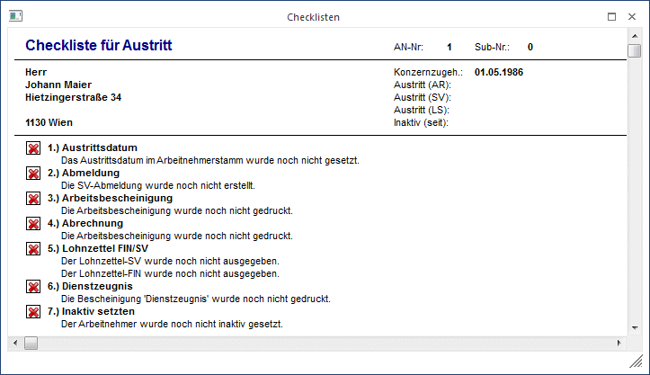
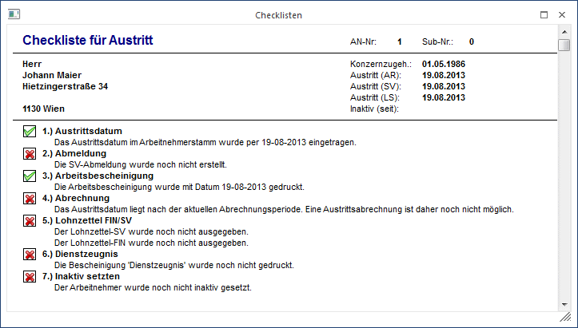

Bei einigen Arbeiten müssen immer wieder die gleichen Aktionsschritte durchgeführt werden, die aber nicht immer unbedingt miteinander verbunden sind und in unterschiedlichen Menüpunkte untergebracht sind. Um diese Arbeiten zu vereinfachen und den Überblick zu gewährleisten, gibt es die sogenannten Checklisten, die dem Anwender zeigen, welche Aktionen für bestimmte Arbeiten notwendig sind, und welche davon schon durchgeführt wurden.
Die Checkliste kann derzeit aus den Menüpunkten
ü Arbeitnehmerstamm
ü Arbeitnehmerinfo
durch Anklicken des Buttons Checklisten oder durch Drücken der Tastenkombination ALT + C aufgerufen werden.
Im ersten Schritt wurde die Austrittscheckliste realisiert, da beim Austritt doch sehr viele Aktionen durchgeführt werden müssen. Im oberen Bereich der Checkliste werden der Name, die Adresse und die wichtigsten Datümer des AN, für den die Checkliste abgearbeitet wird, angezeigt. Die Austrittscheckliste selbst umfasst folgende Schritte:

ü Austrittsdatum
Für die
Abrechnung und diverse Auswertungen muss das Austrittsdatum eingetragen werden.
Dies sollte auch der erste Schritt sein, weil davon weitere Schritte
abhängen.
ü Abmeldung
Die Abmeldung muss
bis 3 Tage nach Austritt des AN an die GKK übermittelt werden.
ü Arbeitsbescheinigung
Die
Arbeitsbescheinigung zur Vorlage beim AMS muss ausgegeben werden (wobei dieser
Punkt theoretisch nicht mehr notwendig ist, da ja auch eine Abmeldung via ELDA
gemeldet wird, das AMS verlangt diese Auswertung trotzdem noch).
ü Abrechnung
Die
"Austrittsabrechnung" muss durchgeführt werden.
ü Lohnzettel FIN/SV
Der
Lohnzettel muss bis Ende des nachfolgenden Monats an die ELDA übermittelt
werden. Wird der Lohnzettel ausgegeben, bevor eine Abrechnung erstellt wurde,
wird mit einer entsprechenden Warnung darauf hingewiesen. Beim Lohnzettel gibt
es 3 unterschiedliche Stati, die auch mit unterschiedlichen Symbolen angezeigt
werden:
Der Lohnzettel SV
und der Lohnzettel FIN wurde noch nicht erstellt
Der Lohnzettel SV und/oder der
Lohnzettel FIN wurde erstellt aber der Lohnzettel SV und/oder der Lohnzettel FIN
wurde noch nicht übermittelt
Der Lohnzettel SV und der Lohnzettel
FIN wurde bereits übermittel.
ü Inaktiv setzten
Zuletzt muss
der AN noch auf Inaktiv gesetzt werden, damit der AN nicht bei weiteren
Abrechnungen berücksichtigt wird. Dieser Schritt ist auch immer als der Letzte
anzusehen.
Diese Liste kann noch um eine beliebige Liste von individuell gestalteten Textbausteinen erweitert werden, wobei diese Eintragungen vor der Option "Inaktiv setzten" gestellt werden. Diese Erweiterung erfolgt im Programm WinLine START über den Menüpunkt Optionen/LOHN-Parameter.
Beim ersten Aufruf der Checkliste werden alle Arbeitsschritte mit einem roten X dargestellt, d.h. es wurde noch kein Schritt durchgeführt. Durch einen Klick auf die gewünschte Option (der Mauscursor wird zu einer Hand) wird der entsprechende Menüpunkt im Kontext der Aktion aufgerufen - z.B. wird bei der Option "Austrittsdatum" der AN-Stamm geöffnet, wobei auch gleich in das Feld Austrittsdatum gewechselt wird, oder bei der Abmeldung wird der AN-Stamm geöffnet, in das Register Formulare gewechselt und gleich die Abmeldung vorgeschlagen. Wird dann die Option ausgeführt und bestätigt (im Fall des Austrittsdatums muss der AN gespeichert werden), wird die Option mit einem grünen Häkchen versehen, als Zeichen dafür, dass die Aktion erledigt ist.

In welcher Reihenfolge die einzelnen Punkte abgearbeitet werden, bleibt jedem Anwender selbst überlassen. Wenn die Checkliste geschlossen wird, werden die aktuellen Stati gespeichert, sodass sie bei einem erneuten Aufruf der Checkliste sofort ersichtlich ist, welche Punkte bereits erledigt sind und welche nicht. Es ist auch nicht unbedingt erforderlich, dass bei allen AN alle Punkte durchgearbeitet werden müssen - hier erfolgt keine logische Prüfung.